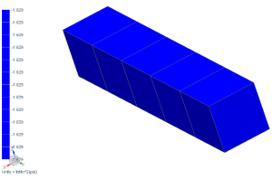

Display the axial stress after unloading
Display the axial stress at the end of the unloading subcase.
 Post-Processing Navigator
Post-Processing Navigator
-

 Removing Loads (expand)
Removing Loads (expand)
-
Stress - Element Nodal (expand)
-
 YY
YY
Your display might look slightly different, but the color bar range should indicate that the axial stress is effectively zero when the load is removed.
